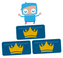

")
FunOrb Olympics: Part 1 - Behind the Scenes

11th September 2009 – Behind the Scenes
Now that the results thread is up and we’ve started handing out the prizes, it seems almost strange not to be working on the FunOrb Olympics. This project has been an enormous part of our working day for the past few months now (well beyond the 6 weeks when the event was actually running). Now it’s over, I thought I’d share some of the behind the scenes information regarding the Olympics.
The first stage with any major project is the initial idea. We wanted to come up with an event that would really grab the community’s attention and get people involved with the games. To do this we held an idea meeting, with the whole FunOrb Community Management team in one place, working towards one goal. Our initial ideas ranged from the basic (a very big version of Game of the Week) through to the downright bizarre (something to do with pigeons and a car wash). In the end we decided to create the biggest event we could and to get as many people involved as possible: the idea behind the FunOrb Olympics was born. The massive, 6-week long event would include 2 multiplayer games and a single-player competition.
The Individual event was arguably the easiest to run, but definitely the most complicated to score. Should we work purely on a medal basis (gold for 1st place, silver for 2nd, etc.), or should we use a different method? The competitive nature of the single-player highscores means that it’s a real challenge to get into the top 3 and we wanted to reward that, but we also recognised that it was tricky enough just to get into the top 20. In the end, we decided to give each position in the top 20 a specific point value and the winner of the competition would be the player with the most points.
We debated the actual point values at great length, trying to find a fair solution. Eventually we agreed that we should recognise how hard it is to claim the top spot, but getting 1st place for a single game should not guarantee you the gold medal for the whole event. We settled for the following point allocation: 1st place = 50 points, 2nd = 35, 3rd=25, 4th = 20, 5th =17, 6th=15 and then each place thereafter was reduced by 1 point, right down to zero. In this way, your overall score would increase as long as you made it into the top 20, but getting one of the top spots would give you that additional edge.
With this score system in mind, we settled on 10 games to focus the Individual event on:
- Brick-a-Brac
- Bouncedown
- Deko Bloko
- Lexicominos
- Miner Disturbance
- Monkey Puzzle 2
- Orb Defence
- Pool
- Vertigo 2
- Zombie Dawn
Each of these games allowed free players to take part without giving members an advantage, meaning that the competition would be fair and open to as many people as possible. Over the next 6 weeks, we focused on 2 games a week, leaving one week free at the end of the competition for us to review the scores and accounts thoroughly.

For the most part this was a straightforward process; players would rack up some fantastic scores and we’d allocate them their appropriate points. I would then update the results thread first thing every Monday. This is no easy feat when you have 131 names to add to a table that equates to 3 and a bit A4 pages of solid HTML code, unformatted of course (a lovely quirk of our forums).
We watched the league each week and noticed several names striving for dominance. There were moments when we, as the organisers, were on the edge of our seats and we even made an occasional bet about who would ultimately be victorious. As the competition advanced we began to see three names really stand out as the clear and absolute winners of the competition and we wondered if anyone was likely to take their place.
With the last game over and the scores in hand, the top three positions (and the winners of the grand prize) were clear:
- Mr Jovial with a staggering 233 points. These included 3 gold medals, 1 silver and a bronze
- Dmw Da Zohan with an epic 212 points (1 gold, 3 silver and a bronze)
- Sniper Test with 169 points (1 gold and a bronze)
Well played, guys!
Next time we’ll give you the low down on how the Multiplayer events went.
Mod Raven
FunOrb Community Management